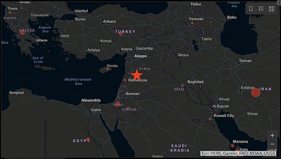

新冠病毒境外感染人数破万，世卫组织为何还不宣布“大流行”？
原文链接 备份链接 随着新冠病毒在世界范围内快速传播，全球大流行的趋势似乎无可避免。但在要不要宣布全球大流行的问题上，依然存在两极的看法。 日内瓦当地时间 3 月 3 日，世界卫生组织对外发布了最新一期新型冠状病毒肺炎情况发展的每日报告。 …

图片来源：TRT WORLD
记者：肖恩
“
叙利亚是中东/北非仅剩的三个未报告新冠病毒确诊病例的国家之一，另外两个是同样受到战火摧残的利比亚和也门。这些地区无异于“定时炸弹”。
”
如何预防新冠病毒？各国卫生部门给出的建议都是勤洗手、远离人群。这个简单的步骤，在饱受战乱之苦的叙利亚却只能成为空谈。疫情或许将给这个已经千疮百孔的国家带来又一场梦魇。
截至目前，叙利亚并未报告任何新冠肺炎确诊病例。但没报告是否等于没有，要打一个问号。世界卫生组织东地中海区域办事处主任艾哈迈德·曼达里（Ahmed Al-Mandhari）19日就指出，有一些地区/国家仍未向该组织通报全部的病例情况。
叙利亚拥有1800万人口，几个邻国土耳其（359）、伊拉克（192）、约旦（70）、黎巴嫩（158）、以色列（677）均已发现了大规模确诊病例，其中多数来往密切。世卫组织在邮件中对半岛电视台表示，叙利亚新冠肺炎疫情爆发的风险非常高。

但叙利亚当局坚称国内没有出现新冠肺炎病例。据阿拉伯叙利亚通讯社（SANA）报道，截至16日叙利亚共进行了103次新冠病毒检测，全部呈阴性。
一名大马士革政府医院的工作人员认为，常年战乱的叙利亚基本没有旅游业，早就处于封锁状态，因此能够轻易阻挡病毒。
但据巴基斯坦《每日时报》报道，该国卫生官员称有8例在巴基斯坦确诊的病例都有叙利亚或伊拉克旅行史，从卡塔尔多哈入境。叙利亚和已经确诊逾18000例病例的伊朗也有密切往来。
总部位于伦敦的叙利亚人权观察组织称，实际上在首都大马士革等多个地区已经出现新冠肺炎死亡病例，但政府一直保持噤声。随后叙利亚卫生部长亚齐兹（Nizar Yazigi）否认了这一说法。
叙政府已经采取一系列防控疫情的措施，包括关闭国内所有大中小学、公共场所和餐厅、健身房等容易出现人群聚集的场所，缩短工作时间等。叙利亚内政部20日宣布，禁止来自多个重点疫情地区旅客入境。原定于4月13日举行的议会选举也被推迟。
而在与土耳其接壤的叙利亚西北部，有一块地方更是如履薄冰——伊德利卜省。
据《纽约时报》报道，世卫组织在一个多月前就向叙利亚政府运送了一批检测试剂盒，但在反对派控制的西北部地区还没能收到任何试剂盒。当地医生说，新冠病毒可能已经在毫无监测的情况下在这个极度危险的环境里蔓延了数周。
叙利亚美国医学会（Syrian American Medical Society）伊德利卜地区医院负责人塔纳利（Mohamed Ghaleb Tennari）透露，目前医院已经有患者出现疑似新冠肺炎症状，还有患者死亡，但因为没有检测能力，无法确认他们是否真的感染了新冠肺炎。
世卫组织在土耳其南部的跨境事务发言人哈尔多森（Hedinn Halldorrson）18日表示，世卫组织援助的检测试剂盒预计于下周抵达伊德利卜省，一些样本也可以送到土耳其进行检测。目前叙利亚仅有的一个检测实验室在大马士革。
连年内战，加上土叙边境炮火不断，叙利亚人距离“太平”还很遥远。从2012年起，伊德利卜省就处于反对派武装的控制下，目前共有约300万人居住在那里。
伊德利卜省也是俄土博弈的核心。去年12月，叙利亚政府军在俄罗斯军事支持下，在伊德利卜对土耳其支持的叙反对派武装发动袭击，随后双方屡次交锋。直至本月初，俄罗斯总统普京和土耳其总统埃尔多安就伊德利卜省停火问题达成协议。但叙政府和反对派至今都没有让步迹象，平静状态预计不会维持太久。
而新冠病毒极可能“趁乱作祟”。在伊德利卜，有100万因战乱而流离失所的人们，他们挤在帐篷或废弃大楼里，一个帐篷有时候会住上10多个人，基本没有流水可用。试想在这样的环境里，一旦出现新冠病毒，会产生何种灾难性后果。
“你要我们勤洗手？有些人一周都没法给自己的孩子洗一次手。他们还住在户外。”非营利组织Maram援助和发展基金会伊德利卜地区负责人梅沙赫尔（Fadi Mesaher）说。
无休止的战争也将叙利亚的医疗设施摧毁殆尽。据世卫组织给出的数据，从去年12月至今，伊德利卜省就有超过了84家医院和医疗设施遇袭受损，或被迫关门。仍在运转的医院也面临物资紧缺的困境。叙利亚全国也只有50%的公立医院能够完整运转。
叙利亚美国医学会的一名工作人员提到，叙北部甚至没有能用来隔离感染者的设施。当地医生预计，伊德利卜省可能会有100万人感染，10万至12万人可能死亡，还有1万人需要用到呼吸机。但目前伊德利卜省可用的呼吸机数量只有153个。
伊德利卜卫生指挥部表示，他们正在为应对新冠肺炎疫情做准备，将在当地3家医院设立60个床位。本月内，该地区的学校和其他设施将被用作隔离中心，收治出现轻微新冠肺炎疑似症状的患者。
战火中还有大批叙利亚难民涌向土耳其，试图寻找通往欧洲的路。世卫官员哈尔多森表示，接下来将在土叙边境设立检查点。
20日，联合国秘书长古特雷斯告诫，如果任由病毒像野火一样蔓延——尤其是在世界最脆弱的地区，那么，病毒可能造成数百万人死亡。叙利亚是中东/北非仅剩的三个未报告新冠病毒确诊病例的国家之一，另外两个是同样受到战火摧残的利比亚和也门。这些地区无异于“定时炸弹”。
“每次我们以为叙利亚的情况已经跌到谷底的时候，生活总会朝我们笑笑，然后变得更糟。”Maram援助和发展基金会联合创始人Yakzan Shishakly这样说。
未经授权 禁止转载

原文链接 备份链接 随着新冠病毒在世界范围内快速传播，全球大流行的趋势似乎无可避免。但在要不要宣布全球大流行的问题上，依然存在两极的看法。 日内瓦当地时间 3 月 3 日，世界卫生组织对外发布了最新一期新型冠状病毒肺炎情况发展的每日报告。 …
原文链接 备份链接 据世卫组织新冠肺炎情况报告，截至欧洲中部时间7日10时(北京时间7日17时)，中国境外新冠肺炎确诊病例数达到21110例，死亡413例。其中，从3月7日零时至8日零时，意大利新冠肺炎确诊病例新增1332例，累计确诊病例 …
原文链接 备份链接 目前，新冠肺炎疫情在多国持续蔓延，韩国、意大利、伊朗等国感染人数持续增加，比利时、约旦、沙特、塞内加尔、突尼斯、拉脱维亚等国2日宣布出现首例新冠肺炎确诊病例。 据世卫组织最新报告，截至欧洲中部时间3月2日上午10时（ …
原文链接 备份链接 中国停止武汉的航班，延迟了病毒蔓延到其他国家的步伐。在七、八个星期的时间里，我们对病毒的了解已经非常充分，这归功于国际协作和分享信息。我听说中国展开了多项试验，世卫组织也在与中方合作，看哪些药物能被证明为有效 伦敦卫生 …
原文链接 备份链接 【财新网】（记者 丁捷 综合）疫情肆虐两月有余，随着病死率下降，全国累计治愈出院病例超过4万，中国疫情得以缓解。但病毒触角已伸及南极洲外地球上的所有大洲，其他国家风险上升，目前中国确诊境外输入性病例五例，其中宁夏两例、 …